常见问题
1.我要去英国网（以下简称网站）是干什么的？
答：网站成立于2012年底。最早是做签证服务，旅游服务和用车服务。但是经过一段时间经营，发现用车服务是一个 很大的市场，于是现在就把主要精力放在用车服务。签证服务停止，但已经签约的客户不受影响。现在公司的发展战略是 以英国用车服务为基本，兼顾旅游，在适当的时机进军其他国家。
2.网站成立的目的是什么？
答：我们建立这个网站的目的是建立一个诚信，公平，公正，相互理解的网上用车社区（平台）。希望各位司导在这个 社区里找到自己合适的工作，各位乘客在这个平台上找到能为自己服务的人。
3.网站首页的页面布局是怎样的？
答：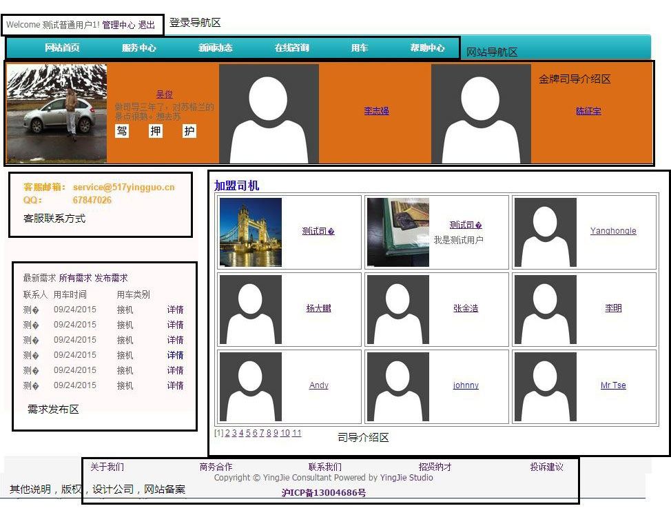
4.网站首页各区域介绍说明
答：
显示欢迎信息，用户昵称。用户控制中心入口，登录和退出入口都在这。
对应导航到网站各功能模块。
这里是诚信，热情的司导介绍区域。
有任何意见，建议或者想说什么，都可以扔过来这里。
乘客的需求都会发布在这里，应该是司导们最应该关注的区域。
司导们自我展示的区域，乘客们最愿意看到的地方。
杂七杂八的信息。为方便国内的朋友，我们公司特地把服务器从美国搬到中国上海，并在上海备案了。所以各位朋友 请自觉准守国内网络的规定，如果发布任何不和谐的内容，我们是会删除的，如果引起不良影响，我们保留相应的权利。
5.网站把用户分为哪几类？
答：网站把用户简单分为两类，乘客和司导（司机，导游）。还有一种是管理员，不过只限网站内部员工使用， 在这里就不说明了。
6.不注册可以使用吗？
答：网站大部分功能都需要注册后才能使用。不注册只能浏览一些静态网页，司导的除联络方式的信息， 查询大概的价格（不能发布需求）
7.我是乘客，怎么使用？
答：首先需要注册。注册之后登陆，您就可以直接浏览司导的全部信息，通过他们的联络方式直接和他们联系， 请求提供用车服务。如果您觉得太麻烦，也可以发布您的需求，等待司导们给您报价，然后从中挑选一个您认为合适的。 但是在发布需求之前，您需要先激活您的用户。
8.我是司导，如何接单？
答：同样需要先注册成为普通乘客，然后激活。以上两步和乘客一样。激活成功后登陆。在“登录导航区”点击“管理中心”， 就会进入用户控制中心。您会看到以下画面。点击黑色方框中的“成为司导”链接，您就可以成为一名司导用户。 并可以完善您的个人信息，车辆信息，上传您的车辆的照片等等。您可以等待乘客和您联系，也可以主动出击，去需求发布区 浏览，并给合适的需求报价。 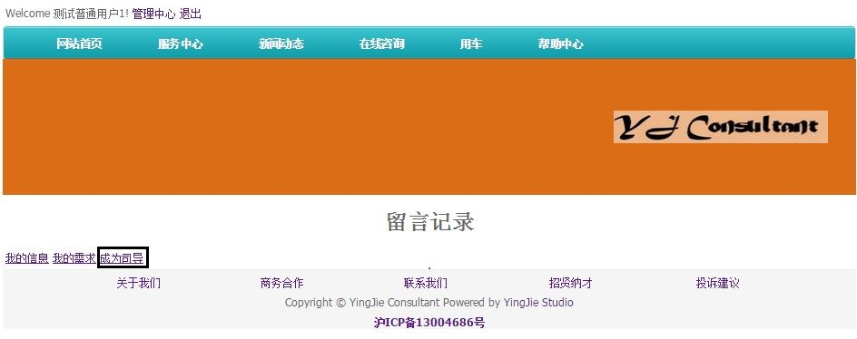
9.如何注册？
答：目前我们只能用电子邮箱注册，电子邮箱地址就是您的用户名。注册页面的邮箱地址，密码和昵称为必填字段。 电子邮箱地址为用户在网站的ID。昵称用来显示在页面，让别人知道怎么称呼您。电子邮箱地址和昵称均不得重复。
10.如何激活？
答：您在注册成功之后都会收到网站自动发出的一封邮件到您的注册邮箱。到收件箱按照提示，一步一步做即可。如果 在收件箱找不到，可以到垃圾邮件中去看看。如果过了很久还是没有收到，您可以检查“登录导航区”，如下图。如果看不到 “激活”链接，说明您的账户已经激活。如果看到”激活“链接，就点击，看到下图所示。按照提示激活。 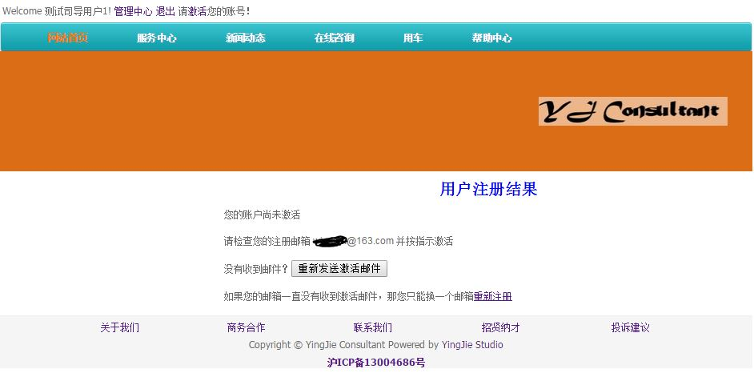
11.如何发布需求？
答；您可以点击”网站导航区“的”用车“链接，也可以点击”需求发布区“的”发布需求“链接。如下图黑框所示。 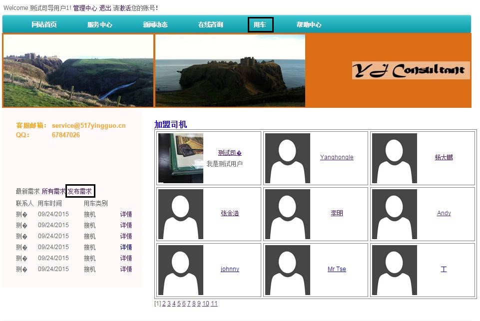 点击完毕会跳转到用车的网页，如下图所示。目前网站支持，接机，送机，搬家（或包车）服务。如果是接送机， 请明确起点和终点，到达时间，航班信息，人数，行李数。如果是搬家（或包车旅游）等日期，时间可商量的情况， 请在留言里写明可以的日期和时间，方便司导了解。 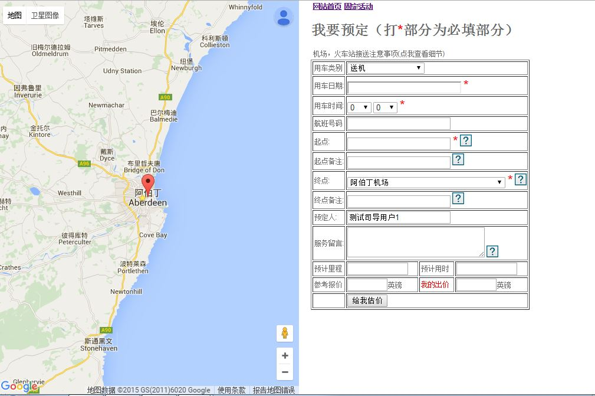 信息填写完毕后，请点击”给我估价“按钮。网站会给出一个参考价。如下图所示。如果您觉得不合适，可以在旁边 ”我的出价“输入框，填写您任何合适的价格。司导们会根据您的出价，结合参考报价，淡旺季，自身的情况报价。 请注意，估价后需求并没有添加到网站数据库，您需要点击“确定订车”按钮，才算发布需求完毕， 司导们才能看见您发布的需求。 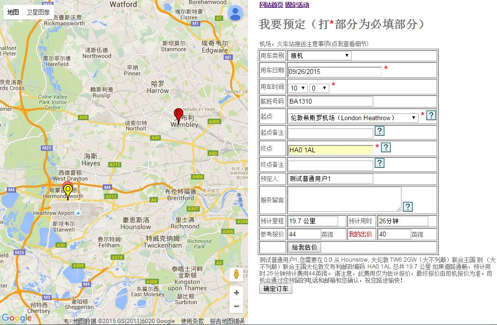
12.如何报价？
答：作为一名司导成员，积极响应乘客的报价是接到更多任务，提升自身排名的好方法。在点击“需求发布区”的 “所有需求”的链接后，您会看到所有需求，如下图所示。您会看到每一条需求都有对应的状态。状态现在分为三种， “成交”，“等待”和“取消”。“成交”意味着这条需求已找到合适的司导。“取消”意味着乘客不再需要这条的用车服务。“等待” 意味着乘客正在焦急等待司导们的报价。所以，司导们需要密切关注处于“等待”状态的需求。 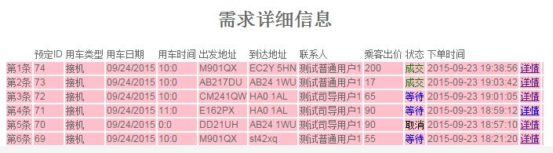 点击一条处于“等待”状态的需求，会进入如下页面。您可以根据参考报价和乘客报价，结合自身的情况给出自己的报价。 还可以在留言里写明您的出价条件和限制。 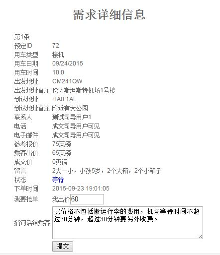
13.收到报价后怎么办？
答：作为一名靠谱的乘客，积极回应司导的报价是赢得司导好评的好方法。如果您觉得司导的报价远远超过您的预算，
请直接拒绝司导，这样可以让他们放心大胆的去做其他的报价，免得担心时间冲突的烦恼。如果您觉得几个司导的报价难于
取舍，请积极和司导们联系，谈清情况，以便尽快做出决定。假设您现在收到两条报价如下图所示。如果您决定了选择其中
一个报价（而且也只能选择一个报价），请点解那个报价后面的“接受”按钮。
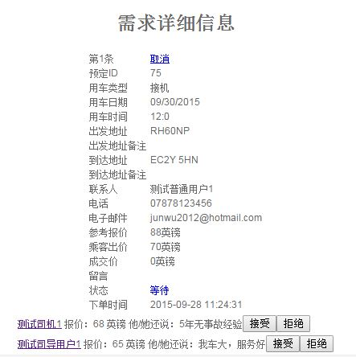
这样，此条需求的状态就变成“成交”状态。成交后，其他司导将不能再报价。系统会自动给“成交”的司导发一封电子邮件，
提醒司导。不过，乘客也应该积极联系司导。
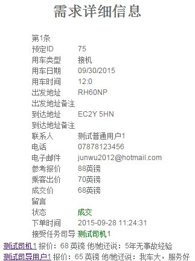
14.作为司导，有乘客接受了我的报价，但是时间冲突了怎么办？
答：作为一名负责任的司导，请您每天登陆我们的网站，进入您的“管理中心”，点击“我的报价”链接，可以看到如下
所示的页面。在状态栏里，您可以看到有这样几个状态，“等待”，“取消”，“被拒绝”，“被他人抢单”，“抢单成功”。其中，
“等待”意味着乘客还没有选择司导，“取消”意味着乘客不再需要用车，该条需求取消。“被拒绝”意味着乘客对您的报价不认
可。“被他人抢单”意味着乘客选择了别的司导。“抢单成功”意味着乘客接受了自己的报价。所以，我们给司导的建议是，对于
处于”等待“状态的需求，结合自己的情况，积极报价。对于”抢单成功“的需求，积极联系乘客。并且检查已报价的需求，
是不是和抢单成功的用车时间有冲突。如果有冲突，如果乘客还没有做决定，司导可以取消报价。免得乘客选择自己而造成
冲突。如果乘客选择了自己，因为时间冲突而不能做，请积极联系乘客，请对方理解。
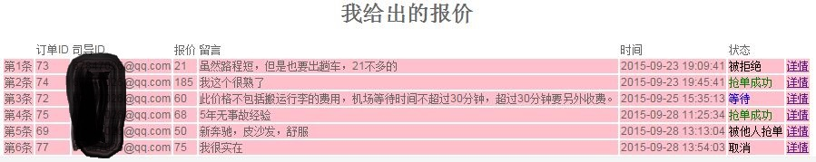
15.如何提高自己的诚信度？
答：网站鼓励司导们通过上传身份证件，缴纳一定押金，积极成交的方式来提升自己的诚信度。乘客们可以通过支付 全部或者部分押金的方式，让司导们觉得自己是靠谱的。如果司乘双方希望网站收取全部或部分费用的话，我们留下公司 银行账号和公司负责人的支付宝账号用于收账。缴费金额不低于成交金额的30%。如果全额支付的话，乘客不需要付现金给 司机。如果支付定金的话，乘客付余款给司机。交易完成后，如果乘客没有投诉，我们将在5个工作日后将扣除掉我们的 服务费后的金额，转账到司机指定的账号。
16.网站的服务费如何收取？
答：我们仅收取信息分享和转账的手续费。一般为成交金额的10%。最低2镑，最高10镑。
17.如何验证驾照，护照，缴纳押金？
答：请将驾照，护照的扫描件，发到我们邮箱service@517yingguo.cn。并写明您的用户ID（您的注册邮箱）。如果 有的司机担心个人资料泄露，您可以遮挡您的生日和地址（仅限这两处）。交纳押金请直接汇到我们公司账户即可 （在reference处写明您的用户ID）。我们在收到您的押金后会给您发一个收到押金的证明。将来，如果您退出我们， 不再需要我们提供的服务，我们会将押金退还。
18.为什么要验证驾照，护照，缴纳押金？
答：我们公司是正规苏格兰注册的公司，在英鸟首页打收费广告，英鸟也有我们公司的注册信。广大司机尽可放心。 要验证资料，收取押金，仅仅是提高您的诚信度。实际上，很多同行也都是这么操作的。
19.如果司乘双方有误会，矛盾怎么办？
答：在我们服务过的司乘中，到目前为止，大家都是通情达理，热情服务的。当然，我们不排除今后会有矛盾产生的 可能。在遇到误会，矛盾时，希望司乘双方先自行协商。如果实在协商不成，可以由我们来调解。投诉方需要写明理由， 搜集证据。如果我们协商不成功，建议其中一方报警。如果司机给乘客造成人生伤害或财产损失，乘客报警后，可以让警方 联系我们，索要司机的证件。但是，我们不会直接将司机证件给乘客。
20.免责申明
答：我们相信绝大部分的用户到这个网站来都是为了找到合适的司导或者找到合适的工作。我们衷心希望这个平台能 帮助到大家。我们也在不断的改进和更新。服务由各个司导提供，也由司导负责。本网站不承担因此造成的误会，财产或 人生的损失。但可以提供帮助。对于没有身份验证的司导，建议乘客谨慎选择。如果对司乘不满意或者是对我们不满意， 都可以发送邮件到客服邮箱 service@517yingguo.cn 。
21.付款方式
答；您若支付人民币的话请转账付款到我们的支付宝账户：
您若支付英镑的话请转账付款到我们英国的barclays账户：
更多信息请看关于我们